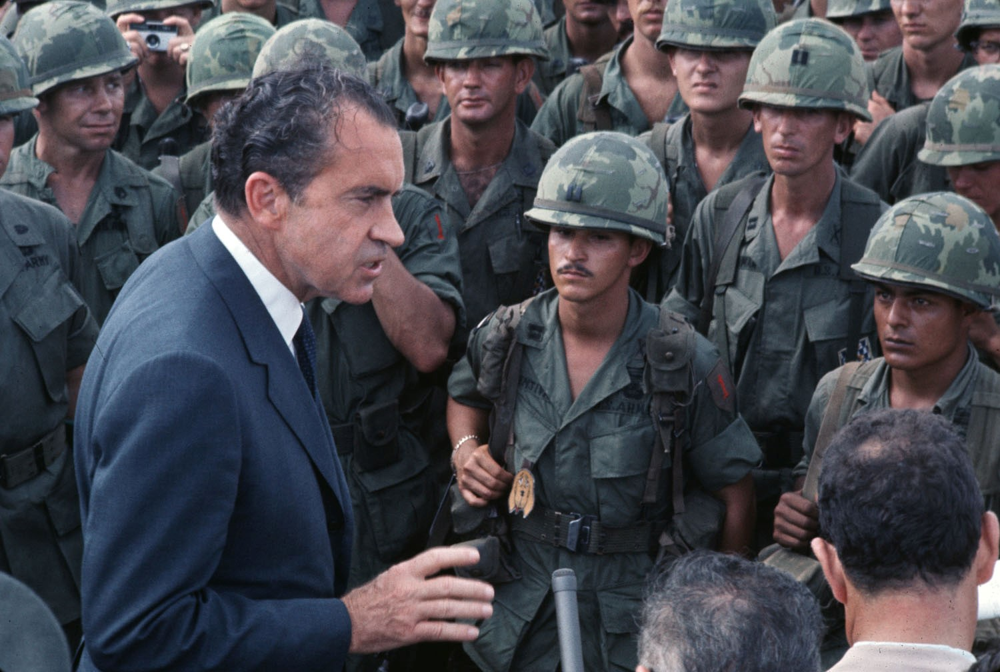

Nixon and the Vietnam War: The Failures of Foreign-Policy
After becoming President in 1969, Nixon’s policies towards Vietnam were based on two principles; 1) the policy of Vietnamization as an alternative policy to Johnson’s military containment. 2) In the run up to his elections, he promised to secure ‘peace with honour’, meaning to secure a respectable settlement for the United States and put an end to the war. Although there are the counter arguments that Vietnam was an ‘unwinnable war’ for the US, and importance had turned to the ‘Great Game’, the two policies that Nixon set out with in 1969 both catastrophically failed, and for this reason, describing his policies as ‘confused and ineffective’, would be valid.
Nixon’s policy of ‘Vietnamization’, can be described as the opposite of Johnson’s ‘Americanization’. Instead of military escalation and adding more American troops to the war, Nixon sought to remove American troops and strengthen the ARVN. Although the policies seem clear-cut rather than confusing, they would be complicated by the escalation of intense bombing in North Vietnam (Operation Line-backer I and II), covert bombing of the Ho Chi Minh Trail in Cambodia (Operation Menu 1969-1973) and a large-scale ARVN operation in Laos (Operation Lam Son Feb-March 1971). As a result, the policy of Vietnamization became disorderly and the costs of the policy reflected negatively on both Nixon and the US. The conflict had caused 38,000 US deaths by 1969, and by 1973, a further 20,500 US lives, along with 107,000 ARVN soldiers. In addition to this, there were 2 million further fatalities across Vietnam, Laos and Cambodia. Furthermore, the withdrawal of US troops meant the ARVN became weak, spineless and ineffective on their own, against a growing intensity and strength of the NVA and Vietcong.
In 1968, Nixon stated to political assistant “I’m not going to end up like LBJ, holed up in the White House… I’m going to stop that war.” Before becoming President, Nixon pledged to the American population that he would secure ‘peace with honour’. Although clear in nature, this would become massively confusing as the years progressed, ironically as a result of his desire to not be the first US president to lose a war, much like Johnson. In October 1972, Kissinger stated that “peace is at hand”, and this would be followed by Nixon’s landslide victory in the November 1972 elections. However, a month later, Nixon ordered the heaviest bombing campaign of the Vietnam War, bombing Hanoi, Haiphong and other northern cities. Consequently, Nixon’s approval ratings fell 32% and faced international condemnation, highlighting the confused nature of Nixon’s aim, which had before seemed so clear-cut. It was not just American attitudes towards the Vietnam War, but the failures of the war redefined global outlook on the reputation of the United States as a ‘world policeman’. Thus, it can be argued that Vietnamization, although it helped Nixon win the election, only prolonged the war by four years, at an immense cost of lives and flouting of the Constitution – with the bombing of Cambodia and Laos – straining of the federal budget causing double-digit inflation, created more divisions and resentment towards the war effort, and the war was ultimately lost, with the South Vietnamese regime overthrown by the NVA in 1975.
However, the proposition can be countered as the arguments do not just weigh completely against Nixon. It is important to note that his policies did create a lot of hope amongst Americans during 1968-69, so they were not completely ineffective. He recognised that the war was a ‘television war’, and winning domestic support from Americans at home was important. The withdrawal of American troops was significant in reducing the growing opposition to the Vietnam War, and was a crucial factor in allowing Nixon to win the 1972 elections by a resounding margin (61% of the votes). Furthermore, there is the argument that Kissinger and Nixon’s priorities had changed towards the ‘Great Game’, with a much greater focus on the ‘bigger picture’ of defeating communists, by focusing on the main superpowers, China and the Soviet Union. Therefore, it can be argued that importance on Vietnam reduced, and contrasted from Eisenhower, Kennedy and Johnson’s focus on containment and fear of the ‘Domino Theory’, and Nixon’s strategy differed – his involved getting American troops out of Vietnam. The new focus on détente could be seen as one of Nixon’s achievements, as this allowed for the Paris Peace Talks to open. Nixon claimed the settlement as a success and stressed that the American-allied southern regime had survived. However, the reality was very different. The 1973 Paris Peace Agreement was a humiliation for the US, and effectively conceded defeat. The same terms that were offered to Johnson five years earlier were agreed upon, and two years later, the ceasefire would be ignored, and the opposite of what America had fought for took place, as Vietnam became united under a communist regime. Nixon’s Vietnamization policy had ultimately failed and been ineffective, securing short-term and fragile peace with very little honour.
To summarise, Nixon’s polices from the period of 1969-73 were both ineffective and confused, evidenced by the simultaneous employment of escalation and searching for peace. The United States’ aims were complicated further by the withdrawal of US troops, leaving vulnerable and weak ARVN troops left to their fighting. This both left an unstable South Vietnamese government, which failed to gain any form of support against a stronger NVA and Vietcong, strengthened by the USA’s ill-considered and counter-productive bombings. This left the United States to be forced into a humiliating settlement in the 1973 Paris Peace Agreement, ultimately conceded defeat – which would come into fruition in 1975 – and underlined Nixon’s policies as ineffective.